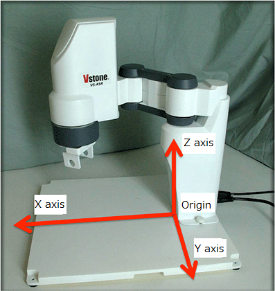
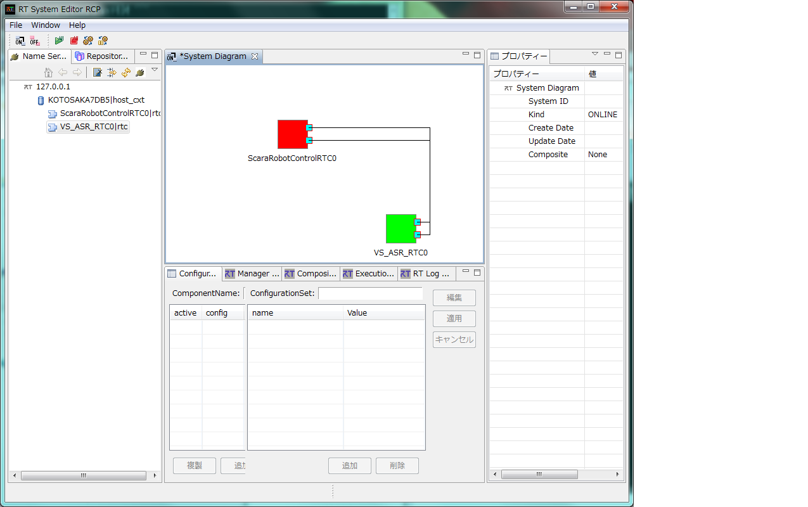
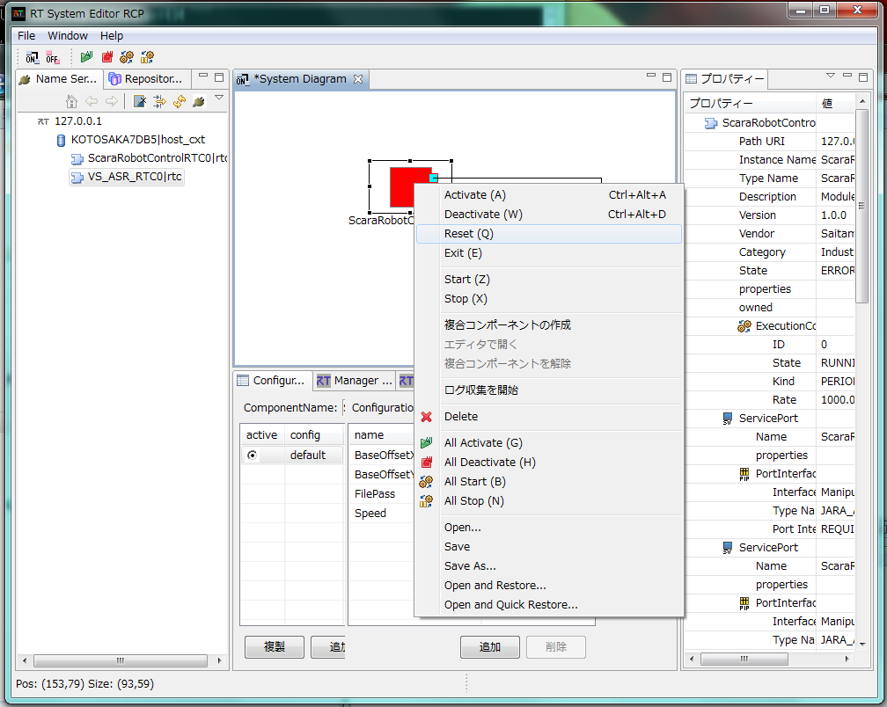
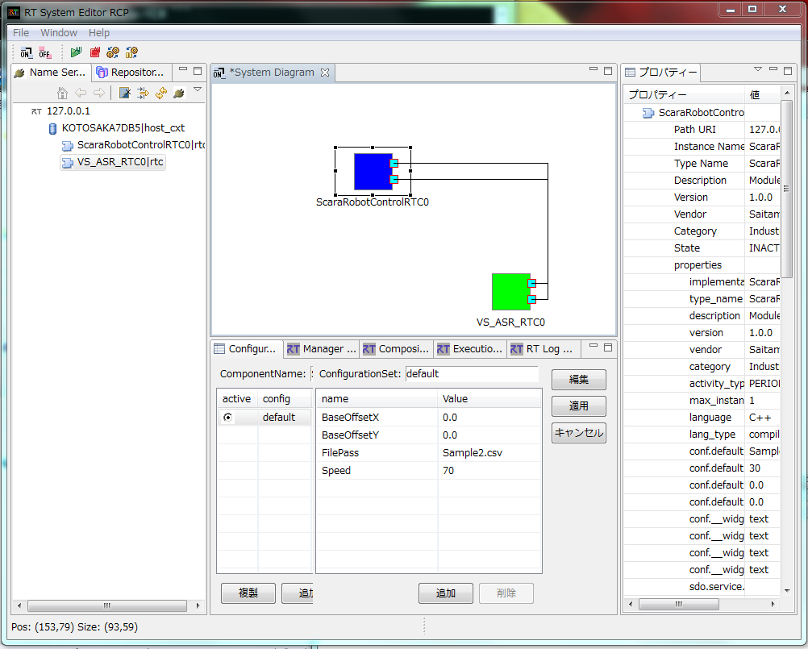
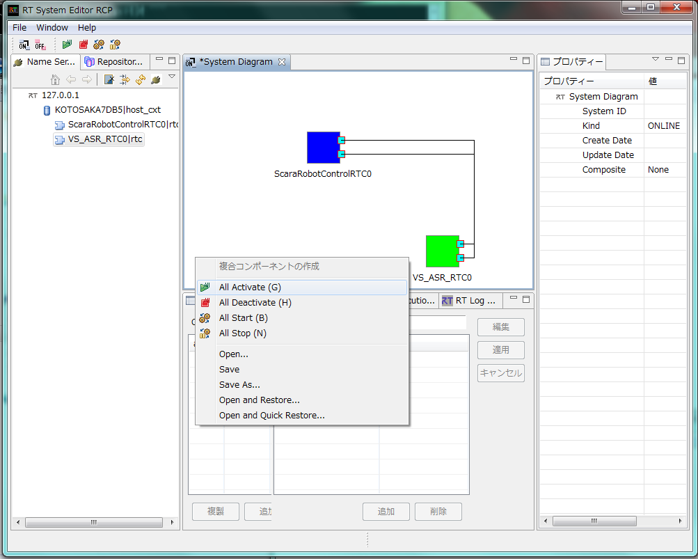

**(Demo 6) Academic SCARA Robot Control **
Contents
1 Introduction¶
1.1 What you’ll experience¶
Academic SCARA Robot Control (ver.1.1)
1.2 System Environment¶
- Windows 7 / 8
- Internet Explorer (IE) 8 / 10
Academic SCARA Robot (VS-ASR) made by VSTONE Co., Ltd. [1]
2 Run the tutorial¶
Your current directory is assumed to be the home of the USB unless specified.
2.1 Start CORBA nameserver (common throughout all tutorials)¶
Once you start, nameserver can be kept running throught all tutorials.
Click the link to start nameserver.
(Only when the link above didn’t work) Open demo folder on Explorer then start rtm-naming.bat by double clicking the file.
Now cmd.exe (Command prompt) is kept open and you’ll see following texts
Starting omniNames for the first time. : Checkpointing completed.
If cmd.exe doesn’t stay, you’re somehow failing to run nameserver so try to find the cause by the following:
3.1) On Explorer, check the drive letter of the tutorial USB (usually either D/E/F. Here we assume as F)
2.2) Manually start cmd.exe (Win 7: [2], Win 8: [3])
3.3) Run the following commands to move to the folder:
prompt> F: prompt> cd demo prompt> rtm-naming.batDiagnose errors. Many errors with CORBA can be found on the WEB.
2.2 Run programs in the tutorial¶
Run ./demo/OpencvRtmDemo/0_StartDemo.bat by clicking on the link below. If it doesn’t work, run it manually from Explorer.
The coordinate system of the SCARA robot is shown in Fig. 1.
Fig. 1 Coordinate system of SCARA robot
Edit ./misc/VstoneScaraRobotRTC/Sample.csv by clicking on the link below.
The enable commands in the SCARA robot is shown in Table 1.
Table 1 Commads in SCARA robots
| No. | Commands |
Formats |
Details |
|---|---|---|---|
| 1 | SERVO_OFF | SERVO_OFF | Turn off all servomotors. |
| 2 | SERVO_ON | SERVO_ON | Trun on all servomotors. |
| 3 | HAND_CLOSE | HAND_CLOSE | Completely close hands. |
| 4 | HAND_OPEN | HAND_OPEN | Completely open hands. |
| 5 | HAND_MOV | HAND_MOV, Rate (Measure: Rate [%]) |
Open/close the finger to the specified width. |
| 6 | CMVS | CMVS, X, Y, Z, Rz (Measure: X, Y, Z [m], Rz [rad]) |
Move hands using the linear interpolation in the orthogonal space up to the target position in the robot coordinate system |
| 7 | CMOV | CMOV, X, Y, Z, Rz (Measure: X, Y, Z [m], Rz [rad]) |
Move hands using the linear interpolation in the joint space up to the target position in the robot coordinate system |
| 8 | JMOV | JMOV, J1, J2, J3, J4 (Measure: J1, J2, J4 [rad], J3 [m]) |
Move hands using the linear interpolation in the joint space up to the target position in the joint coordinate system |
Run ./demo/RTSE.bat by clicking on the link below.
RT System Editor should look like Fig. 2.

Fig. 2 RT System Editor
On the pane on the left, select 127.0.0.1, then clicking the arrow sign above will show the RT Components that are running. Here you should see ScaraRobotControlRTC, VS_ASR_RTC.
Selecting File –> Open New System Editor will open`System Diagram` in the pane at the center. Drag RTCs from left pane onto System Diagram and you’ll see:
Fig. 3 RTC onto the RT System Editor
Connect RTCs on the same pane. Connect them from left in the order listed above.
Click ScaraRobotControlRTC on the same pane. Edit configuration values in the configuration tab just below the pain.
Table 2 Configuration of ScaraRobotControlRTC
Names |
Default values |
Details |
|---|---|---|
| BaseOffsetX | 0.0 | Specify BaseOffset in X axial direction. |
| BaseOffsetY | 0.0 | Specify BaseOffset in Y axial direction. |
| FilePass | Sample.csv | Specify the path where the csv file exists. |
| Speed | 30 | Specify the working speed of the robot from 1 to 100[%] in an integer value. |
Click “ALL” above, activate all RTCs.
Fig. 4 Activate RTC in RTC System Editor
Script that runs step 5 to 8 in groups is provied by clicking on the link below.
./demo/ScaraRobotDemo/8_ConnectRTC.batInput s by keyboard in the command prompt of ScaraRobotControlRTC, then the robot starts operations.
Fig. 5 Scara Robot Control RTC
Command prompt of ScaraRobotControlRTC shows the status of executing commands. (For example, the robot go over the angle limit, and you’ll see:)
Fig. 6 The robot went over the angle limit, then has stopped
To end, “inactivate RTC” –> “disconnect RTCs” –> “stop each RTC”
Click “All Deactivate” at above left.
Do the oposite. That is, right-click on each connection line and “Disconnect”
manually end the command prompts. You can keep rtm-naming.bat running as mentioned earlier.
Note: Script that runs step 11 in groups is provied by clicking on the link below.
./demo/ScaraRobotDemo/11_DemoExit.batMethod for recovery when the robot went over the angle limit or get illegal command, then has stopped.
12.1) The robot went over the angle limit, read out the error, then has stopped.
Fig. 7 1st step of method for recovery
12.2) Move the cursor to the ScaraRobotControlRTC, then right click to open pull-down menu and choose Reset.
Fig. 8 2nd step of method for recovery
12.3) After reset, you’ll see:
Fig. 9 3rd step of method for recovery
12.4) Right click on the space where no RTCs in system diagram to open pull-down menu and choose All Activate. This returns to the initial state.
Fig. 10 4th step of method for recovery
Go back to index | Go to next |
Choose Other language